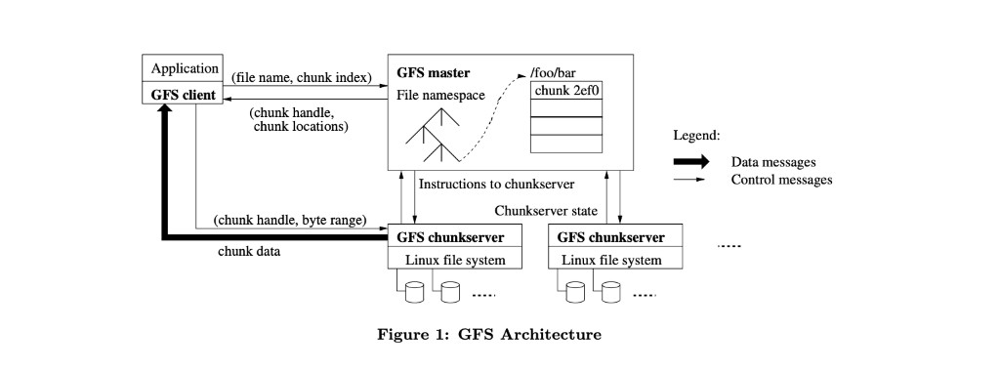
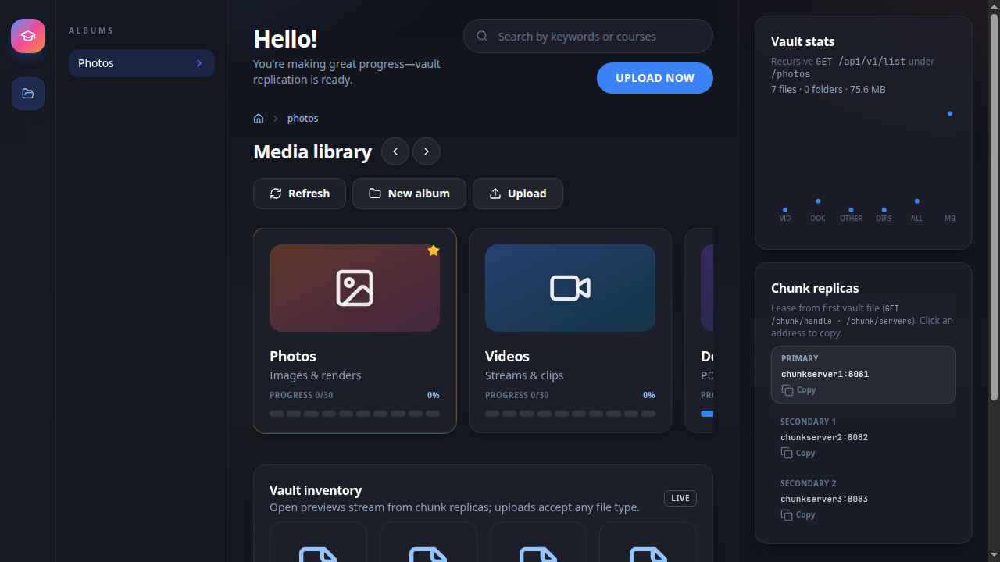

A field report from building Hercules — a Go implementation of the Google File System design. Master–chunkserver architecture, 64 MB chunks, lease-based mutations, an HTTP gateway, and every bug that came with turning a research paper into running code.
Speaker: Caleb Erioluwa Adewole
github.com/caleberi/hercules-dfs →Use ← → or click Next. Press T for outline, D for theme. Click a code tab to switch snippets.
Ten stops: the paper, the reading method, the language choice, the two server types, locking,
failure detection, integrity, the SDK, then the wrap-up. Every code slide is pulled live from
github.com/caleberi/hercules-dfs.
GFS was built for Google's own workloads: huge files, mostly-append writes, commodity hardware that fails routinely, and a small number of large streaming reads rather than millions of small random ones.
Its central bet: push complexity into a single logical master for metadata, and keep chunkservers dumb, replicated, and easy to replace. Failure is treated as the normal case, not the exception.


Before writing a line of Go, I read GFS the way S. Keshav's How to Read a Paper recommends — three passes, each going deeper than the last.
Title, abstract, section headings, conclusions. Enough to answer: what problem, what approach, is this worth a second pass? For GFS: yes — a production filesystem design, published with real operational numbers.
Read in order, note figures and diagrams, skip proofs and low-level detail. This is where the master/chunkserver split, the lease protocol, and the relaxed consistency model became clear.
The deepest pass: try to reconstruct the system yourself and see where your version diverges from the paper's. Hercules is this pass — every gap between my first instinct and the paper's actual design became a design decision I had to make consciously.
GFS is dense with implied detail — the paper describes what the system does far more than how to make it correct under concurrency. Pass three is where those gaps surface: version numbers, stale-replica handling, lease renewal races. None of that is optional once you're writing Go instead of reading English.
A small language surface means the code reads like the paper's own pseudocode. No generics gymnastics, no framework indirection standing between the design and the implementation.
GFS is fundamentally about concurrent actors — a master juggling heartbeats, leases and
replication, chunkservers serving reads while accepting writes. Goroutines + channels +
sync.RWMutex map directly onto that shape.
net/rpc, encoding/gob, crypto/sha256, and
math (for the φ Accrual CDF) come from the standard library alone — no framework
needed to get a working RPC system with wire encoding and checksums.
Click a tab to see the real handler behind each responsibility.
func (ma *MasterServer) loadMetadata() error {
file, err := ma.rootDir.GetFile(common.MasterMetaDataFileName, os.O_RDONLY, common.FileMode)
if err != nil {
var pathError *os.PathError
if errors.As(err, &pathError) {
err = ma.rootDir.CreateFile(common.MasterMetaDataFileName)
if err != nil {
return err
}
}
file, err = ma.rootDir.GetFile(common.MasterMetaDataFileName, os.O_RDONLY, common.FileMode)
if err != nil {
return err
}
}
defer func(file *os.File) {
err := file.Close()
if err != nil {
log.Err(err).Stack().Send()
}
}(file)
var meta PesistentMeta
decoder := gob.NewDecoder(file)
err = decoder.Decode(&meta)
if err != nil {
if !errors.Is(err, io.EOF) {
log.Printf("error occurred while loading metadata (%v); attempting recovery", err)
corruptName := fmt.Sprintf("%s.corrupt.%d", common.MasterMetaDataFileName, time.Now().Unix())
if renameErr := ma.rootDir.Rename(common.MasterMetaDataFileName, corruptName); renameErr != nil {
log.Err(renameErr).Stack().Msg("failed to rename corrupt master metadata")
return err
}
if createErr := ma.rootDir.CreateFile(common.MasterMetaDataFileName); createErr != nil {
return createErr
}
return nil
}
}
if len(meta.Namespace) != 0 {
func (csm *ChunkServerManager) detectDeadServer() []common.ServerAddr {
csm.serverMutex.Lock()
defer csm.serverMutex.Unlock()
deadServers := make([]common.ServerAddr, 0, len(csm.servers))
for serverAddr, chk := range csm.servers {
if chk.lastHeartBeat.IsZero() || time.Since(chk.lastHeartBeat) >= common.ServerHealthCheckTimeout {
deadServers = append(deadServers, serverAddr)
}
}
return deadServers
func (csm *ChunkServerManager) addGarbage(addr common.ServerAddr, handle common.ChunkHandle) {
csm.serverMutex.Lock()
defer csm.serverMutex.Unlock()
sv, exists := csm.servers[addr]
if exists {
sv.Lock()
sv.garbages = append(sv.garbages, handle)
sv.Unlock()
}
}
// replicationMigration updates and returns the list of chunk handles requiring replica migration.
// It checks the replica count for each chunk in the replicaMigration list and retains only those
func (nm *NamespaceManager) Create(p common.Path) error {
nm.mu.Lock()
defer nm.mu.Unlock()
var (
filename string
dirpath string
)
dirpath, filename = nm.RetrievePartitionFromPath(p)
err := common.ValidateFilename(filename, p)
if err != nil {
return err
}
parents, cwd, err := nm.lockParents(common.Path(dirpath), true)
defer nm.unlockParents(parents, true)
if err != nil {
return err
}
if _, ok := cwd.childrenNodes[filename]; ok {
return nil
}
cwd.childrenNodes[filename] = &NsTree{Path: p, IsDir: false}
return nil
}
func (csm *ChunkServerManager) chooseServers(num int) ([]common.ServerAddr, error) {
type addrToRRTL struct {
addr common.ServerAddr
rrtl float64
}
csm.serverMutex.Lock()
defer csm.serverMutex.Unlock()
if num > len(csm.servers) {
return nil, fmt.Errorf("no enough servers for %v replicas", num)
}
var (
intermediateArr []addrToRRTL
ret []common.ServerAddr
)
for a, server := range csm.servers {
intermediateArr = append(intermediateArr, addrToRRTL{
addr: a,
rrtl: server.serverInfo.RoundTripProximityTime,
})
}
slices.SortFunc(intermediateArr, func(a, b addrToRRTL) int {
if a.rrtl < b.rrtl {
return -1
} else if a.rrtl > b.rrtl {
return 1
}
return 0
})
all := common.TransformSlice(intermediateArr, func(d addrToRRTL) common.ServerAddr { return d.addr })
choose, err := common.Sample(len(all), num)
if err != nil {
return nil, err
}
for _, v := range choose {
ret = append(ret, all[v])
func (ma *MasterServer) serverHeartBeat() error {
deadServers := ma.chunkServerManager.detectDeadServer()
for _, addr := range deadServers {
log.Info().Msgf(">> Removing Server %v from Master's servers list", addr)
handles, err1 := ma.chunkServerManager.removeServer(addr)
err2 := ma.chunkServerManager.removeChunks(handles, addr)
if err := errors.Join(err1, err2); err != nil {
return err
}
}
// perform a broadcast to all servers to get there health status for failure detection
allServers := common.TransformSlice(
ma.chunkServerManager.GetLiveServers(),
func(v common.ServerAddr) string { return string(v) },
)
if len(allServers) == 0 {
return nil
}
var errs []error
for _, addr := range allServers {
args := rpc_struct.ChunkServerHeartBeatArgs{}
args.NetworkData.ForwardTrip.SentAt = time.Now()
reply := &rpc_struct.ChunkServerHeartBeatReply{}
err := shared.UnicastToRPCServer(
addr, rpc_struct.CRPCHeartBeatHandler, args,
reply, shared.DefaultRetryConfig,
)
if err != nil {
errs = append(errs, err)
continue
}
Click a tab to see the real handler behind each responsibility.
func (cs *ChunkServer) heartBeat() error {
arg := rpc_struct.HeartBeatArgs{
Address: cs.ServerAddr,
MachineInfo: cs.MachineInfo,
}
if cs.leases.Length() != 0 {
arg.ExtendLease = true
}
arg.NetworkData.ForwardTrip.SentAt = time.Now()
var reply rpc_struct.HeartBeatReply
if err := shared.UnicastToRPCServer(string(cs.MasterAddr),
rpc_struct.MRPCHeartBeatHandler, arg, &reply, shared.DefaultRetryConfig); err != nil {
return err
}
reply.NetworkData.BackwardTrip.ReceivedAt = time.Now()
if err := cs.failureDetector.Track(reply.NetworkData); err != nil {
log.Err(err).Stack().Msg("err storing network data for prediction")
return err
}
if reply.LeaseExtensions != nil {
common.ForEachInSlice(reply.LeaseExtensions, func(lease *common.Lease) {
cs.leases.PushBack(lease)
})
}
if reply.Garbage != nil {
cs.garbageMu.Lock()
common.ForEachInSlice(reply.Garbage, func(handle common.ChunkHandle) {
cs.garbage.PushBack(handle)
})
cs.garbageMu.Unlock()
}
prediction, err := cs.failureDetector.Predict()
if err != nil {
if !errors.Is(err, detector.ErrNotEnoughHistoricalSamples) {
log.Err(err).Stack().Send()
}
func (cs *ChunkServer) writeChunk(handle common.ChunkHandle, data []byte, mutationType common.MutationType, offset common.Offset, lock bool) (int, error) {
cs.mu.RLock()
chInfo, ok := cs.chunks[handle]
cs.mu.RUnlock()
if !ok {
return 0, fmt.Errorf("chunk %v on server %v does not exist", handle, cs.ServerAddr)
}
if mutationType != common.MutationWrite && mutationType != common.MutationAppend && mutationType != common.MutationPad {
return 0, fmt.Errorf("invalid mutation type for chunk %v: %v", handle, mutationType)
}
if lock {
cs.mu.Lock()
defer cs.mu.Unlock()
}
newLen := offset + common.Offset(len(data))
if newLen > common.ChunkMaxSizeInByte {
return 0, fmt.Errorf("data size for chunk %v on server %v exceeds max size %v bytes", handle, cs.ServerAddr, common.ChunkMaxSizeInByte)
}
chInfo.Lock()
defer chInfo.Unlock()
if newLen > chInfo.length {
chInfo.length = newLen
}
fs, err := cs.rootDir.GetFile(fmt.Sprintf(common.ChunkFileNameFormat, handle), os.O_CREATE|os.O_RDWR, 0644)
if err != nil {
return 0, err
}
defer func(fs *os.File) {
if err := fs.Close(); err != nil {
log.Err(err).Msgf("failed to close file for chunk %v", handle)
}
}(fs)
log.Info().Msgf("Server %v writing data to chunk %v at offset %v", cs.ServerAddr, handle, offset)
var n int
for {
if mutationType == common.MutationAppend {
_, err := fs.Seek(0, io.SeekEnd)
if err != nil {
return 0, err
}
n, err = fs.Write(data)
if err != nil {
log.Err(err).Msgf("failed to append to chunk %v at offset %v", handle, offset)
return 0, err
}
} else {
n, err = fs.WriteAt(data, int64(offset))
if err != nil {
log.Err(err).Msgf("failed to write to chunk %v at offset %v", handle, offset)
return 0, err
}
}
log.Debug().Msgf("[%s] Wrote %d bytes to chunk %v at offset %v", cs.ServerAddr, n, handle, offset)
if n < len(data) {
data = data[n:]
offset += common.Offset(n)
continue
}
break
}
chInfo.lastModified = time.Now()
if newLen >= common.ChunkMaxSizeInByte {
chInfo.completed = true
}
chInfo.checksumDirty = true
if err := fs.Sync(); err != nil {
log.Err(err).Msgf("failed to sync chunk %v to disk", handle)
}
return int(newLen), nil
func (cs *ChunkServer) RPCAppendChunkHandler(args rpc_struct.AppendChunkArgs, reply *rpc_struct.AppendChunkReply) error {
data, ok := cs.downloadBuffer.Get(args.DownloadBufferId)
if !ok {
reply.ErrorCode = common.DownloadBufferMiss
return fmt.Errorf(
"could not locate %v in buffer (might have expired ...)",
args.DownloadBufferId)
}
handle := args.DownloadBufferId.Handle
cs.mu.RLock()
chInfo, ok := cs.chunks[handle]
cs.mu.RUnlock()
if !ok || chInfo.abandoned {
return fmt.Errorf("%v is either abandoned or lives in another dimension", handle)
}
if chInfo.isCompressed {
if err := cs.unarchiveChunks(handle); err != nil {
return err
}
}
var mutationType common.MutationType
offset := chInfo.length
newLength := chInfo.length + common.Offset(len(data))
dataSize := common.BToMb(uint64(newLength))
if dataSize > common.ChunkMaxSizeInMb {
mutationType = common.MutationPad
chInfo.length = common.ChunkMaxSizeInByte
reply.ErrorCode = common.AppendExceedChunkSize
} else {
mutationType = common.MutationAppend
}
reply.Offset = offset
mutation := &common.Mutation{
MutationType: mutationType,
Data: data,
Offset: offset,
}
n, err := cs.doMutate(handle, mutation)
if err != nil {
func (cs *ChunkServer) RPCGetSnapshotHandler(args rpc_struct.GetSnapshotArgs, reply *rpc_struct.GetSnapshotReply) error {
handle := args.Handle
cs.mu.RLock()
chInfo, ok := cs.chunks[handle]
if !ok || chInfo.abandoned {
cs.mu.RUnlock()
return fmt.Errorf("chunk %v does not exist or is abandoned", handle)
}
cs.mu.RUnlock()
if chInfo.isCompressed {
if err := cs.unarchiveChunks(handle); err != nil {
return err
}
}
data := make([]byte, chInfo.length)
if _, err := cs.readChunk(handle, 0, data); err != nil {
return err
}
// Snapshot reads the whole chunk; refresh checksum from the snapshot bytes.
sum := sha256.Sum256(data)
cs.mu.Lock()
chInfo.checksum = common.Checksum(sum[:])
chInfo.checksumDirty = false
cs.mu.Unlock()
var r rpc_struct.ApplyCopyReply
applyCopyArgs := rpc_struct.ApplyCopyArgs{
Handle: handle,
Data: data,
Version: chInfo.version,
func (cs *ChunkServer) RPCApplyCopyHandler(args rpc_struct.ApplyCopyArgs, reply *rpc_struct.ApplyCopyReply) error {
handle := args.Handle
cs.mu.RLock()
chInfo, ok := cs.chunks[handle]
cs.mu.RUnlock()
if !ok || chInfo.abandoned {
return fmt.Errorf("chunk %v does not exist or is abandoned", handle)
}
if chInfo.isCompressed {
err := cs.unarchiveChunks(handle)
if err != nil {
return err
}
}
_, err := cs.writeChunk(handle, args.Data, common.MutationWrite, 0, true)
if err != nil {
return err
}
cs.mu.Lock()
chInfo.version = args.Version
cs.mu.Unlock()
log.Info().Msgf("Server %v : Copy handler done", cs.ServerAddr)
reply.ErrorCode = common.Success
chunk-{handle}.chk filesNamespace locking keeps directory operations safe; leases keep chunk writes ordered without a distributed lock.
func (nm *NamespaceManager) lockParents(p common.Path, lock bool) ([]*NsTree, *NsTree, error) {
locked := []*NsTree{}
current := nm.root
nm.root.RLock()
locked = append(locked, nm.root)
if string(p) == "" || string(p) == "/" {
if lock {
nm.root.RUnlock()
nm.root.Lock()
}
return locked, nm.root, nil
}
pf := strings.Split(string(p), "/")
parts := []string{}
for _, part := range pf {
if part != "" {
parts = append(parts, part)
}
}
for i, name := range parts {
child, ok := current.childrenNodes[name]
if !ok {
for j := len(locked) - 1; j >= 0; j-- {
locked[j].RUnlock()
}
return nil, nil, fmt.Errorf("path %s is not found", p)
}
current.RUnlock()
locked = locked[:len(locked)-1]
isLast := (i == len(parts)-1)
if isLast && lock {
child.Lock()
} else {
child.RLock()
}
locked = append(locked, child)
current = child
}
return locked, current, nil
}
// unlockParents releases the locks on the provided list of locked nodes in reverse order.
func (nm *NamespaceManager) unlockParents(locked []*NsTree, lock bool) {
if len(locked) == 0 {
return
}
lastIndex := len(locked) - 1
for i := lastIndex; i >= 0; i-- {
if i == lastIndex && lock {
locked[i].Unlock()
} else {
locked[i].RUnlock()
}
}
}
func (csm *ChunkServerManager) extendLease(handle common.ChunkHandle, primary common.ServerAddr) (*chunkInfo, error) {
csm.chunkMutex.RLock()
chk, ok := csm.chunks[handle]
csm.chunkMutex.RUnlock()
if !ok {
return nil, fmt.Errorf("cannot extend lease for %v", primary)
}
if chk.primary != primary && chk.expire.After(time.Now()) {
return nil, fmt.Errorf("%v does not hold lease for %v ", primary, handle)
}
chk.expire = chk.expire.Add(common.LeaseTimeout)
return chk, nil
func (csm *ChunkServerManager) getLeaseHolder(handle common.ChunkHandle) (*common.Lease, []common.ServerAddr, error) {
csm.chunkMutex.RLock()
chk, ok := csm.chunks[handle]
csm.chunkMutex.RUnlock()
if !ok {
return nil, nil, fmt.Errorf("cannot find chunk handle %v - Invalid most likely", handle)
}
chk.Lock()
defer chk.Unlock()
var staleServers []common.ServerAddr
lease := &common.Lease{}
Φ Accrual turns "missed heartbeat" into a continuous suspicion score instead of a binary flag; a plain 60 s timeout still makes the actual removal decision.
func phi(timeDiff, mean, stdDeviation float64) float64 {
if stdDeviation == 0 {
return math.Inf(1) // Cannot compute φ with zero variance
}
// Standardize the time difference: z = (t - μ) / σ
z := (timeDiff - mean) / stdDeviation
// Compute the CDF of the standard normal distribution: F(z) = (1 + erf(z/√2))/2
// erf is the error function, available in math package
cdf := 0.5 * (1 + math.Erf(z/math.Sqrt2))
// Compute φ = -log10(1 - F(z))
// If cdf ≈ 1, 1-cdf is very small, so handle edge case to avoid log(0)
if cdf >= 1.0 {
return math.Inf(1) // Extremely high suspicion (failure almost certain)
}
phiValue := -math.Log10(1.0 - cdf)
if math.IsNaN(phiValue) || math.IsInf(phiValue, -1) {
func (fd *FailureDetector) Predict() (Prediction, error) {
fd.mu.RLock()
if fd.isShutdown {
fd.mu.RUnlock()
return Prediction{}, ErrAlreadyShutdown
}
fd.mu.RUnlock()
ctx, cancel := context.WithTimeout(context.Background(), fd.ContextTimeout)
defer cancel()
entries, err := fd.Window.Get(ctx)
if err != nil {
return Prediction{}, ErrHistoricalSampling
}
minRequiredSamples := int(float64(fd.Window.size) * MinSamplesRatio)
if len(entries) < minRequiredSamples {
return Prediction{}, ErrNotEnoughHistoricalSamples
}
sort.Slice(entries, func(i, j int) bool {
return entries[i].Eta.Before(entries[j].Eta)
})
arrivalTimes := common.TransformSlice(entries, func(entry Entry) float64 {
return float64(entry.Eta.UnixMilli())
})
intervals := make([]float64, len(arrivalTimes)-1)
for i := 1; i < len(arrivalTimes); i++ {
intervals[i-1] = arrivalTimes[i] - arrivalTimes[i-1]
}
if len(intervals) == 0 {
return Prediction{}, ErrInsufficientIntervalData
}
mean := common.Sum(intervals) / float64(len(intervals))
variance := 0.0
common.ForEachInSlice(intervals, func(v float64) {
variance += math.Pow(v-mean, 2)
})
variance /= float64(len(intervals))
if variance == 0 {
return Prediction{}, ErrZeroVariance
One catches corruption at rest; the other catches replicas that quietly fell behind.
var metadatas []PersistedMetaData
for handle, ch := range cs.chunks {
// Recompute checksum lazily (avoid hashing the full chunk on every write).
if ch.checksumDirty && !ch.isCompressed {
filename := fmt.Sprintf(common.ChunkFileNameFormat, handle)
f, ferr := cs.rootDir.GetFile(filename, os.O_RDONLY, common.FileMode)
if ferr == nil {
if _, serr := f.Seek(0, io.SeekStart); serr == nil {
hasher := sha256.New()
if _, cerr := io.Copy(hasher, f); cerr == nil {
ch.checksum = common.Checksum(hasher.Sum(nil))
ch.checksumDirty = false
}
}
func (cs *ChunkServer) RPCCheckChunkVersionHandler(
args rpc_struct.CheckChunkVersionArgs, reply *rpc_struct.CheckChunkVersionReply) error {
cs.mu.Lock()
defer cs.mu.Unlock()
chinfo, ok := cs.chunks[args.Handle]
if !ok {
log.Info().Msgf(
"Server %s: chunk %v not found, marking as stale",
cs.ServerAddr, args.Handle)
reply.Stale = true
return nil
}
if chinfo.version == args.Version {
chinfo.lastModified = time.Now()
reply.Stale = false
return nil
}
if chinfo.version+common.ChunkVersion(1) == args.Version {
log.Info().Msgf(
"Server %s: chunk %v is one version behind, updating version",
cs.ServerAddr, args.Handle)
reply.Stale = false
chinfo.lastModified = time.Now()
chinfo.version++
return nil
}
reply.Stale = true
chinfo.lastModified = time.Now()
if chinfo.version > args.Version {
log.Warn().Msgf(
"Server %s: chunk %v local version %v ahead of authoritative %v (stale for quorum; not abandoning)",
cs.ServerAddr, args.Handle, chinfo.version, args.Version)
return nil
}
A native Go client that turns paths and byte offsets into chunk handles, leases and RPC calls — so callers never see the plumbing.
func (hercules *HerculesClient) GetChunkServers(handle common.ChunkHandle) (*common.Lease, error) {
hercules.cacheMux.RLock()
lease, exists := hercules.cache[handle]
stale := exists && lease.IsExpired(time.Now())
hercules.cacheMux.RUnlock()
if exists && !stale {
return lease, nil
}
if stale {
hercules.cacheMux.Lock()
delete(hercules.cache, handle)
hercules.cacheMux.Unlock()
}
var primaryAndSecondaryServersReply rpc_struct.PrimaryAndSecondaryServersInfoReply
err := shared.UnicastToRPCServer(
string(hercules.master), rpc_struct.MRPCGetPrimaryAndSecondaryServersInfoHandler,
rpc_struct.PrimaryAndSecondaryServersInfoArg{Handle: handle},
&primaryAndSecondaryServersReply,
shared.DefaultRetryConfig,
)
if err != nil {
return nil, err
}
newLease := &common.Lease{
Handle: handle,
Expire: primaryAndSecondaryServersReply.Expire,
Primary: primaryAndSecondaryServersReply.Primary,
Secondaries: primaryAndSecondaryServersReply.SecondaryServers,
}
if newLease.IsExpired(time.Now()) {
return nil, fmt.Errorf("GetChunkServers = %v has expired before use", newLease)
}
hercules.cacheMux.Lock()
func (hercules *HerculesClient) MkDir(path common.Path) error {
reply := &rpc_struct.MakeDirectoryReply{}
return shared.UnicastToRPCServer(
string(hercules.master),
rpc_struct.MRPCMkdirHandler,
rpc_struct.MakeDirectoryArgs{Path: path}, reply, shared.DefaultRetryConfig)
}
// CreateFile creates a file at the specified path.
// It sends an RPC request to the master server to create the file.
//
// Parameters:
// - path: The path of the file to create.
//
// Returns:
// - An error if the RPC call fails.
func (hercules *HerculesClient) CreateFile(path common.Path) error {
reply := &rpc_struct.CreateFileReply{}
return shared.UnicastToRPCServer(
string(hercules.master),
rpc_struct.MRPCCreateFileHandler,
rpc_struct.CreateFileArgs{Path: path}, reply, shared.DefaultRetryConfig)
MkDir · CreateFile · ListRead · Write · AppendRenameFile · DeleteFile · GetFileThe paper describes the shape of the system. Git history is where the real questions showed up — and where the fix was never quite the last word.
A deposit-path check ran outside the primary's lock, so two near-simultaneous mutations both read "not yet applied" and both proceeded.
Done() on the download buffer fires once, and
writeChunk mutates under chInfo.Lock().
PopAllReverse the lease deque to find a holder — lookup that can race the next writer.
If two clients retry the same append, what should make the second one a no-op?
Early versions let any replica accept a write and gossip it around. It "worked" on one node and collapsed the moment two clients raced the same chunk.
CheckChunkVersion — it no longer bumps the version on timeout
alone.If leases are "just a timeout," why can't a secondary start writing the moment the clock runs out?
Re-replication compared checksums after the copy was already accepted as done, so a truncated snapshot could still join the replica set.
performReplication now checks version, length and
checksum before registerReplicas. Mismatch garbage-collects the target. Snapshot reads
rehash from the bytes they just copied.If you verify after you already trust the replica, what did you actually verify?
I wanted φ Accrual to evict nodes directly. The detector's own notes already split the job: monitor, interpret, then let the application act.
Should a noisy suspicion score ever be allowed to evict a replica by itself?
Every snippet in this talk was pulled directly from the source — clone it, break it, read the tests, or open an issue.
github.com/caleberi/hercules-dfs →master_server/ · chunkserver/ · detector/namespace_manager/ · hercules/ · gateway/common/constants.go · shared/rpc.goCaleb Erioluwa Adewole · Gophers Nigeria Meetup